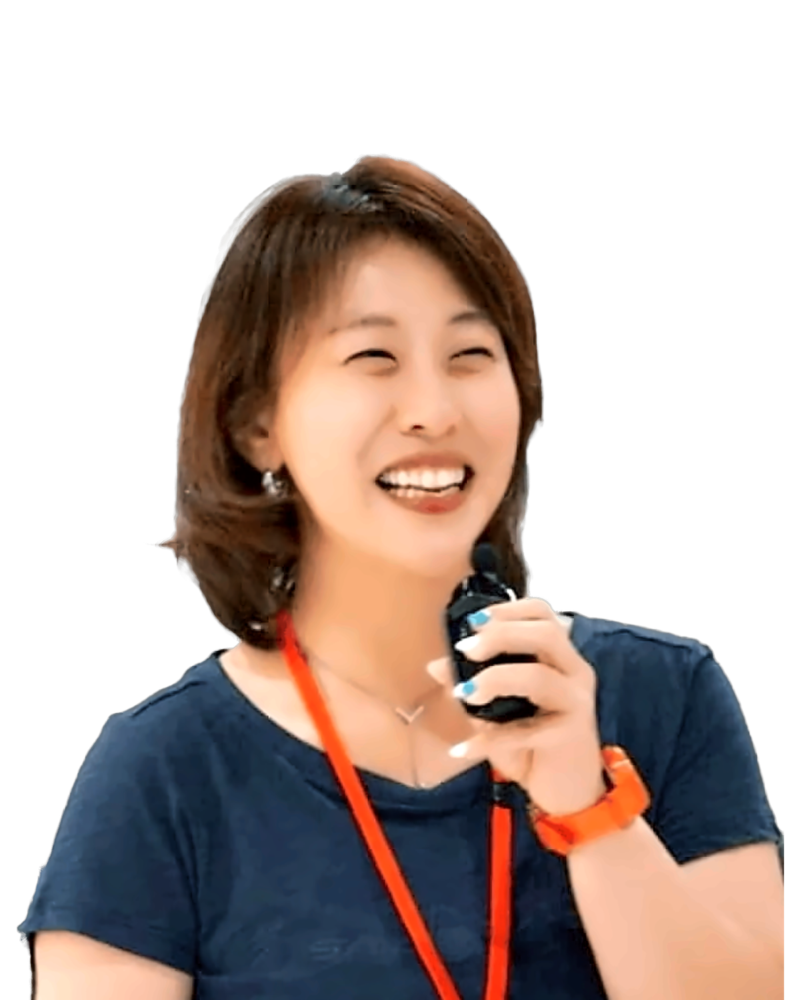

経営者・個人事業主・独立して働くあなたへ
毎日 誰かのために
考えているあなたへ今度は 自分のことを
話す時間を
仕事やまわりのための判断が先になって、
自分がこれからどうしたいかは、後回し。
診断と対話で、今の自分と次の一歩を考えます。
— the horizon, your next step
FOR YOU
こんなこと
ありませんか
- 毎日たくさんの判断をしているのに、自分のことは後回しになっている。
- 立場上、まわりに迷いや弱音を話しにくい。
- 次に何をしたいのか、言葉にしようとすると止まってしまう。
- 一人で考えていると、同じところを回ってしまう。
うまく説明しようとしなくて大丈夫です。
今の気持ちを言葉にするところから、一緒に始めます。
KNOW YOURSELF
診断は
自分を知る手がかり
インナーポテンシャル診断で、目標創造力・思考のコントロール・五感観察力・自己決断力・自己信頼の5つを、今どのくらい発揮できているかをグラフで見ます。
大切なのは、結果の数字だけで決めつけないこと。ご自身の状況や経験と照らし合わせて読み解き、今の自分を言葉にするきっかけにします。
- 内容
- インナーポテンシャル診断・診断書・結果の解説
- 解説
- 30〜40分・1対1・オンライン（Zoom）
- 初回だけでも
- 初回だけのご利用もできます。続けるかどうかは、受けてから考えてください。
- 診断のみ
- 診断だけのお申し込みは受け付けていません。結果は必ず対話で一緒に読み解きます。

A TIME TO TALK
答えを急がず
あなたのペースで
赤澤久美子が、あなたの言葉を丁寧に聴きます。柔らかく、話しやすい時間の中で、一緒に整理しながら次に試す一歩を考えます。
HOW TO START
お申し込みから
解説までの流れ
日程は診断書が届いてから決めます。先に日時を押さえる必要はありません。
お申し込み・お支払い
お申し込みページから申し込み、お支払いをお済ませください。
診断のご案内
お支払いを確認したあと、診断の回答ページをお送りします。
診断に回答
回答が終わったら、赤澤へお知らせください。診断書を手配します。
解説の日を決める
診断書が届いたら、ご都合をうかがって日時を決め、ZoomのURLをお送りします。
結果を一緒に読み解く
1対1で30〜40分。今の自分を知り、次に試したいことを考えます。
SIX MONTHS
話す 試す 振り返る
6か月
続けて取り組みたい方へ
個別セッションで自分のテーマを整理し、日々の仕事で試す。その経験をグループで振り返り、次の行動へつなげます。
- 個別 60分月1回
- グループ 90分月1回
- 再診断6か月目に。初回と見比べて振り返ります
- 料金
- 月22,000円（税込）× 6か月
総額132,000円（税込）／1人
税別：月20,000円・総額120,000円
お支払い方法（毎月・一括）は、お申し込み前にご案内します - グループ
- 少人数で振り返る時間です。人数・開催の条件は、お申し込み前にご案内します。
QUESTIONS
よくある
ご質問
まだ目標をうまく言葉にできません
今気になっていることや、考えがまとまらないところからお話しいただけます。
初回のあと 半年コースに入る必要がありますか
初回だけで終えることもできます。続けたい方には、半年コースをご案内します。
診断だけを申し込めますか
診断と解説はセットでお届けしています。診断のみのお申し込みは受け付けていません。
どこで受けられますか
初回の解説はオンライン（Zoom）で、赤澤と1対1で行います。
解説の日はどうやって決めますか
診断書が届いてから、ご都合をうかがって日時を決めます。決まったらZoomの参加URLをお送りします。